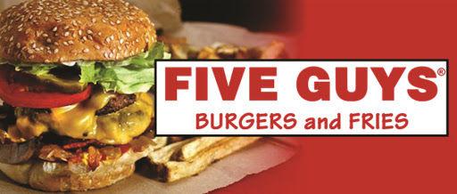
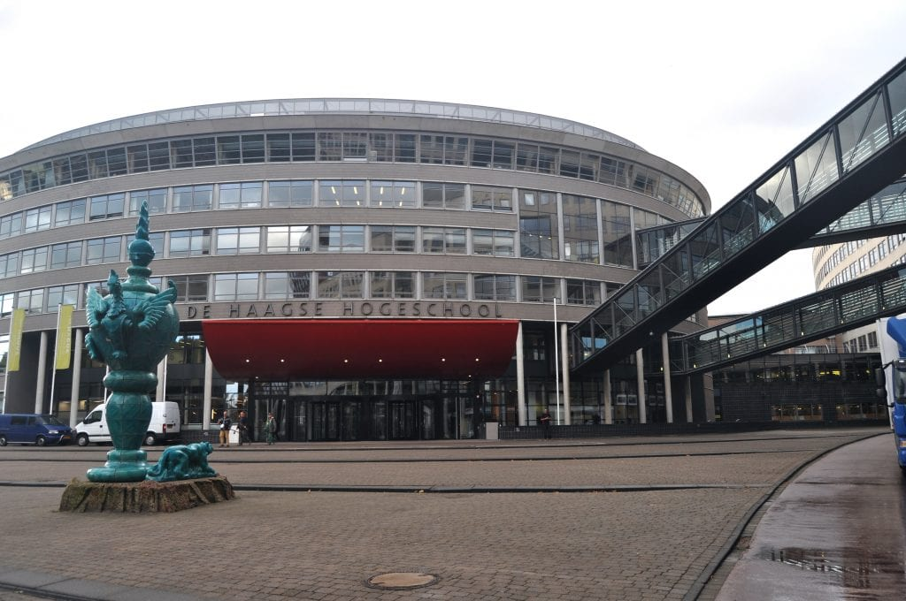

- Summer of 2015-2017 - Weddings Waiter at a restaurant in my hometown.
- March 2019 - October 2019 - Five Guys, Burgers and Fries Crew Member
- October 2019 - February 2021 - Five Guys, Burgers and Fries Shift Manager
- August 2021 - Present - Salsa Shop, Shift Leader
- Although I haven't had the chance to get a job within the UX Industry, I believe that most of the skills that I learned while working in customer service (team work, communication, time management) will allow me to make a good use of them once I get a job as a UX Designer, those also being skills required for a position as such.

- Highschool “Ion Cantacuzino”, Pitesti (2013-2017)
- University of Applied Scienes, The Hague (2019-present)